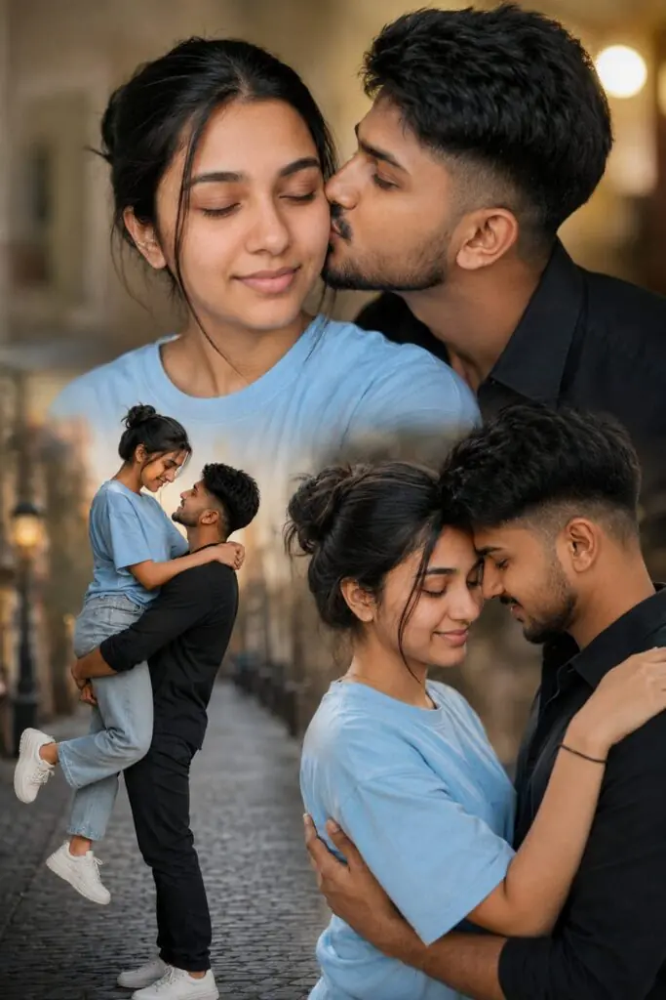
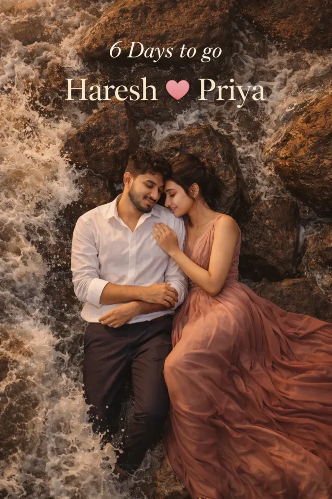
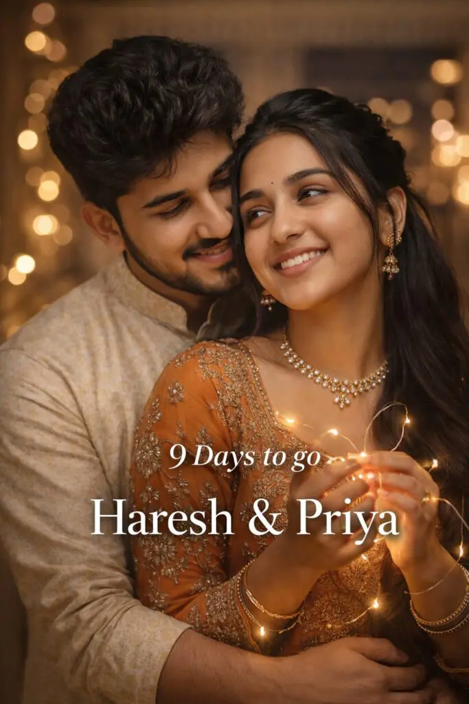
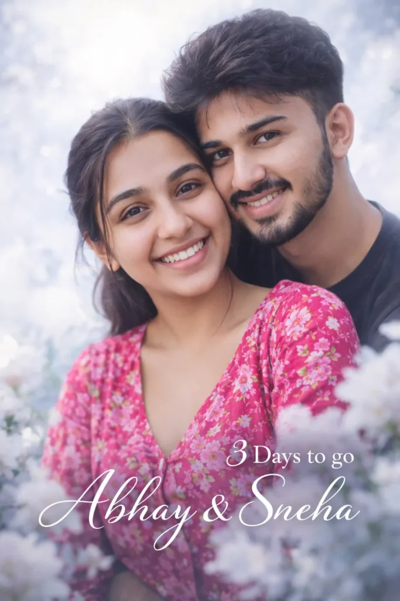
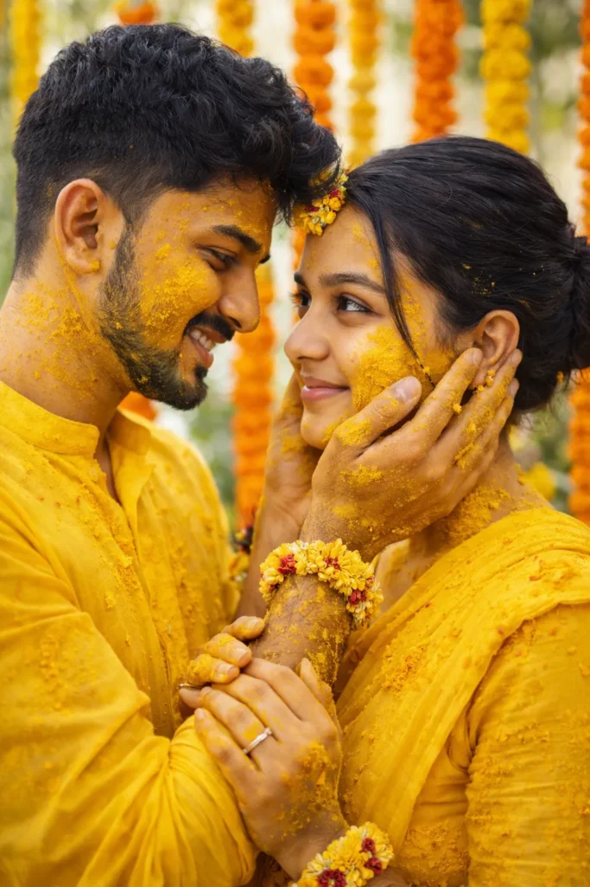

In this post I will share pre wedding photography prompts for ChatGPT. You can create hyper realistic pre-wedding and wedding images with these prompts — a Soulmate poster collage, beach and drone shots, countdown posters for your wedding date, a vintage scooter shoot, bridal portraits and a haldi ceremony look.
You can use ChatGPT, Gemini Nano Banana or any other image generation tool to create images
All demo photos were created with ChatGPT.
Soulmate Poster Collage Prompt
Want more awesome prompts?
Join our community and get the latest viral prompts daily.
Follow on Instagram
Three Pose Romantic Collage Prompt

Beach Rocks Drone View Prompt

Fairy Lights Ethnic Prompt

White Flowers Close-Up Prompt

Vintage Scooter Street Prompt

Beach Walk Countdown Prompt

Wooden Boat River Prompt

Red Lehenga Bridal Portrait Prompt

Just Tap to Copy.
Beach Forehead Touch Prompt

Lakeside Gold Lehenga Prompt

Green Field Bouquet Prompt

Haldi Ceremony Prompt

Just Tap to copy
How to Use These Pre Wedding Prompts
- Open ChatGPT, Gemini Nano Banana or any AI image tool you already use.
- Upload a clear photo of both faces in good light — this decides how well the couple’s faces match.
- Copy any prompt above and paste it along with your photo.
- In the countdown prompts, change the number of days and the two names to your own before generating.
- If the faces change, add “do not change the faces, keep 100% same as uploaded photo” and try again.
You can also swap the outfit colours, the location or the time of day in any prompt to get a completely different pre-wedding shoot from the same structure.